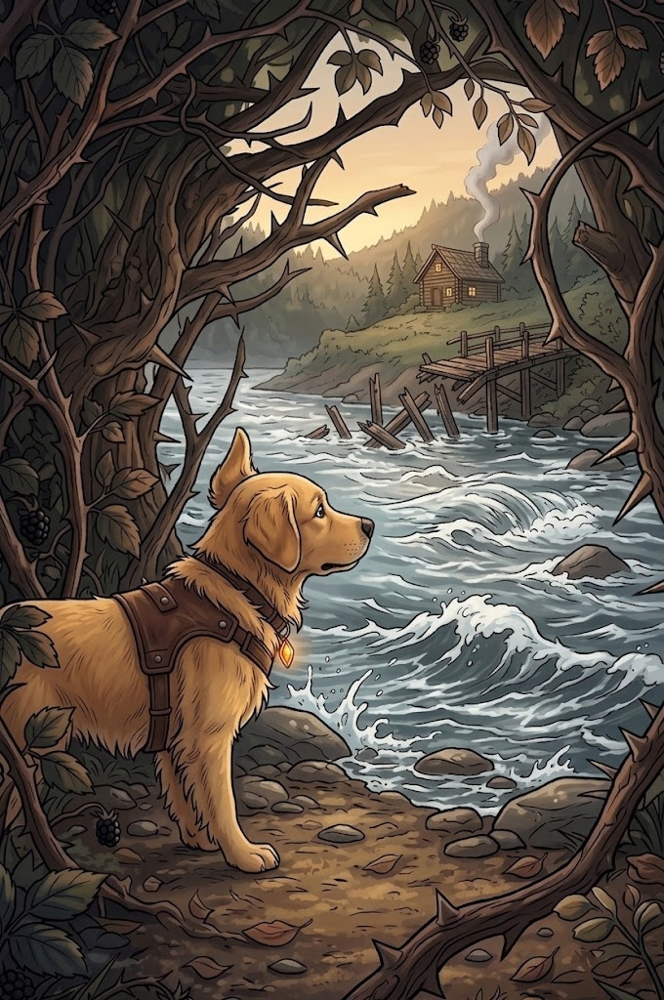

2/3
Camino actual: Las Aguas Rápidas
🔊 Narración:
Nami llega a la orilla del río. El agua corre muy rápido y salpica su hocico. El viejo puente de madera que usaba su familia está roto.
Sin embargo, a lo lejos, Nami logra ver el humo de la chimenea de su casa y levanta las orejas con esperanza. ¡Está tan cerca!
♦ ───── ♦